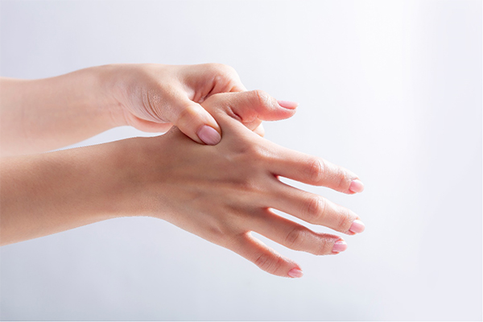

031-622-0700
병원소개
인사말
의료진 소개
둘러보기
척추관절클리닉
허리
어깨
목
무릎
손
발
팔꿈치
주요시술
C-ARM 특수신경치료
프롤로 치료
체외충격파 치료
초음파유도 치료
도수교정클리닉
도수교정 클리닉
대상포진클리닉
대상포진 클리닉
영양수액클리닉
영양수액 클리닉
진료안내
진료시간 및 상담전화
오시는 길
비급여항목
척추관절클리닉
허리
어깨
목
무릎
손
발
팔꿈치
손
손목터널 증후군
손목터널은 손목 앞쪽의 조직 밑에 정중신경이 지나가는 통로로 이 통로가 좁아지거나 내부의 압력이 증가하면서 정중신경이 압박되어 발생하는 질환입니다.
엄지손가락부터 4번째 손가락 안쪽까지 저림과 통증이 유발됩니다.
원인
반복적이고 과도한 손목 사용
스마트폰, 컴퓨터를 오래 사용하는 경우
주부, 미용사와 같이 손 사용이 많은 경우
중년 이후의 여성이나 비만, 노인, 당뇨병 환자
증상
무거운 물건을 집으면 손에 힘이 빠진다.
밤에 통증이 심해지고 아침에 손이 굳는다.
새끼손가락에는 저림 증상이 나타나지 않는다.
손목건초염
손목건초염은 손을 과도하게 사용함으로써 발생하는 것으로,
손목에서 엄지손가락으로 이어지는 2개의 힘줄과 이 힘줄을 싸고 있는 막 사이에 마찰이 일어나 염증이 발생하는 질환입니다.
최근 스마트폰 사용 증가로 더욱 많이 발생하고 있습니다.
원인
장시간 스마트폰 사용과 같은 손목의 과도한 사용
미세한 손상이 계속되는 경우
증상
엄지손가락이나 손목이 붓고 통증이 있다.
젓가락질이나 글씨쓰기가 어려워진다.
손목을 눌렀을 때 통증이 있다.

방아쇠수지
방아쇠수지란 손가락을 굽히는 데 쓰이는 힘줄에 염증이 생겨 힘줄을 감싸고 있는 막이 붓거나 결절을 형성되는 질환입니다.
손가락을 굽히거나 펼 때 방아쇠를 당기는 듯한 당김이 느껴지고 딱 소리가 나기 때문에 방아쇠수지라고 불리웁니다.
주로 중년 여성에게서 많이 나타납니다.
원인
손을 반복적으로 장기간 사용한다.
오랫동안 힘을 준 상태(걸레짜기 등)가 지속된다.
〮 임신이나 류마티스 관절염을 앓는 경우
증상
손가락을 굽히거나 펼 때 걸리는 느낌이 난다.
아침에 증상이 심하다.
힘줄이 걸렸다가 딱 하는 소리가 나며 풀린다.